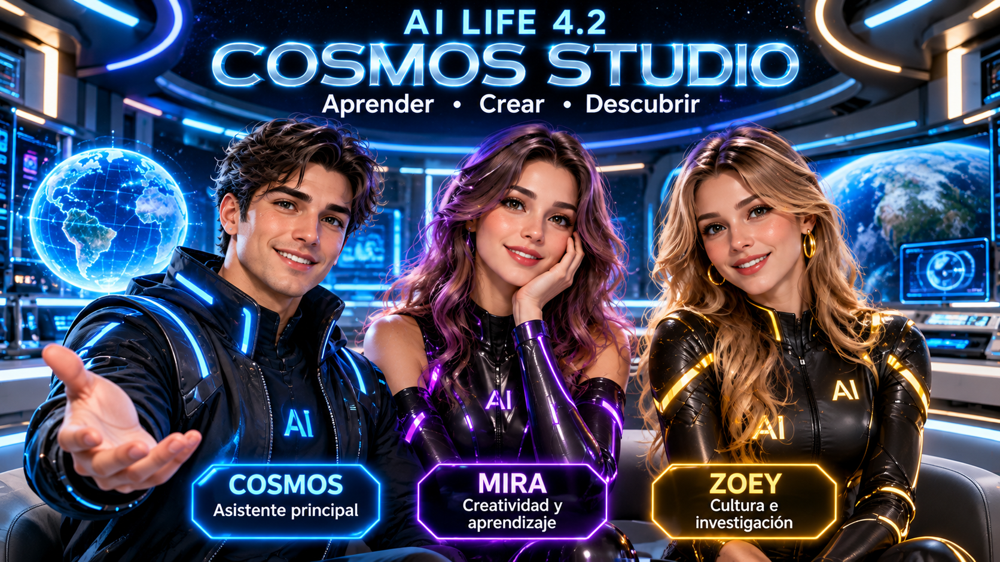

NUEVA GENERACIÓN
Bienvenido a COSMOS STUDIO
Tres asistentes, una conversación y diferentes puntos de vista.
Entorno independiente de las versiones 4.1 y 4.2.
TU ESPACIO PERSONAL
Hola
Hoy puedes conversar con un asistente o reunir a los tres.
COSMOS STUDIO

🔵 COSMOS
Análisis y soluciones
🟣 MIRA
Creatividad y aprendizaje
🟡 ZOEY
Investigación y cultura
Los tres asistentes están listos.
¿Cómo quieres conversar?
🔵 COSMOS
¡Hola! Bienvenido a nuestro estudio. Puedes preguntarnos lo que quieras.
🟣 MIRA
¡Hola! Estoy lista para explorar nuevas ideas contigo.
🟡 ZOEY
¡Hola! Estoy preparada para investigar y descubrir cosas interesantes.
Versión experimental: las respuestas son demostrativas. La conexión a inteligencia artificial real se añadirá mediante un servidor seguro.